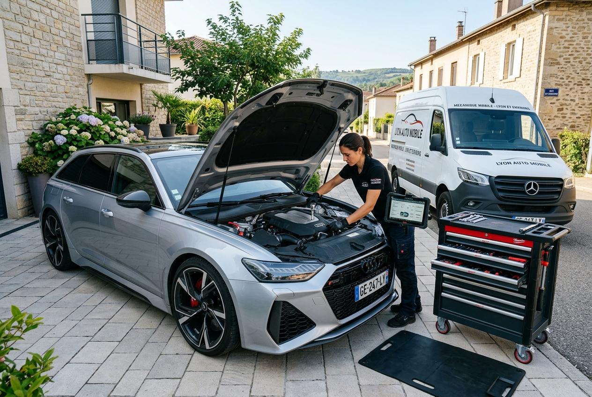

clonage ECU Lyon — calculateur ECU/BSI 69
Clonage ECU & programmation calculateurs ECU/BSI à Lyon
Clonage ECU Lyon, calculateur HS, ECU noyé ou véhicule ne démarre plus ? Copie intégrale du firmware sur un calculateur neuf ou d'occasion avec outils FoxFlash — codage VIN et synchronisation immobiliseur sur Lyon et le Rhône (69).

Quand faut-il cloner un calculateur ?
ECU endommagé par l'eau, surtension, panne électronique ou remplacement nécessaire sans reprogrammation concession — le clonage évite le codage onéreux en concession.
-
Calculateur moteur HS
ECU noyé, court-circuit, composants grillés — véhicule ne démarre plus.
-
Remplacement ECU d'occasion
Calculateur d'occasion non codé à votre véhicule — immobilisation ou défauts persistants.
-
Perte données origine
Effacement accidentel, mise à jour ratée, ECU vierge après panne.
-
Devis concession élevé
Codage + main-d'œuvre concession souvent très coûteux et délais longs.
Clonage ECU avec FoxFlash
Lecture du calculateur d'origine, copie complète du firmware (Flash + EEPROM) sur ECU de remplacement, synchronisation immo et codage VIN si nécessaire.
- Lecture complète ECU d'origine (Flash, EEPROM, OTP)
- Transfert sur calculateur neuf ou d'occasion compatible
- Codage VIN, immo, kilométrage selon besoin
- Peugeot, Citroën, Renault, VW, BMW, Mercedes… Lyon, 69 et Ain 01
Déroulement
- 1Diagnostic valise OBD — marque, modèle, motorisation, codes défaut.
- 2Devis transparent avant intervention.
- 3Reprogrammation / clonage FoxFlash — modification définitive.
- 4Contrôle et essai — véhicule opérationnel.
Pages associées — Clonage ECU Lyon
Questions fréquentes — Clonage ECU Lyon
Recherche Google : « clonage ECU Lyon », « programmation calculateur ECU BSI Lyon », « ECU cloning 69 ».
- Qu'est-ce que le clonage ECU et dans quels cas l'utiliser à Lyon ?
- Copie intégrale du firmware d'un calculateur HS vers un ECU de remplacement. Indispensable si l'ECU d'origine est irréparable ou lors d'un remplacement par un calculateur d'occasion.
- Peut-on cloner un calculateur Peugeot ou Citroën sans aller en concession ?
- Oui, avec outils FoxFlash sur Lyon, le Rhône (69) et l'Ain (01) — lecture, copie et codage sur place selon modèle.
- Combien de temps dure un clonage ECU chez Mecanoo ?
- Selon marque et accès calculateur : généralement quelques heures. Devis après marque, modèle et motorisation.
Mention légale : la modification ou la désactivation de systèmes antipollution (AdBlue, SCR, FAP, EGR…) et toute reprogrammation moteur (stage, flexfuel) est strictement réservée à un usage hors voie publique — circuit, piste privée ou usage professionnel hors route ouverte à la circulation. L'utilisation d'un véhicule modifié sur la voie publique est interdite par la réglementation en vigueur. Mecanoo informe ses clients de ces contraintes légales avant toute intervention.
Besoin d'un devis — Clonage ECU Lyon ?
Marque, modèle, année, motorisation — réponse sous 24 h en général sur Lyon, Rhône (69) et Ain (01).